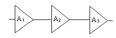
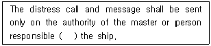
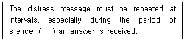
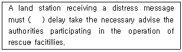

전파전자기능사(구) (2010-03-28 기출문제)
1과목: 임의 구분
1. AM 송신기에서 1[MHz]의 반송파를 2[kHz]의 가청주파수로 진폭변조했을 때 점유주파수 대역폭은?
- 2[kHz]
- 4[kHz]
- 988[kHz]
- 1.002[kHz]
(정답률: 알수없음)

2. FM 수신기를 AM 수신기와 비교할 때 회로 구성상의 차이점이 아닌 것은?
- 진폭제한기가 사용된다.
- 주파수 변별회로가 사용된다.
- 전력증폭기가 사용된다.
- 스켈치 회로가 사용된다.
(정답률: 알수없음)
3. 국부발진회로의 구비조건으로 적당하지 않는 것은?
- 발진주파수가 안정할 것
- 발진출력이 충분할 것
- 고조파 함유율이 클 것
- 주파수 조정이 간단할 것
(정답률: 알수없음)
4. 디지털 변조 방식 중에서 에러 확률(심볼 오율)이 가장 적은 것은?
- 2진 ASK
- 2진 FSK
- 2진 PSK
- QAM
(정답률: 알수없음)
5. 디지털 신호(0, 1)의 정보 내용에 따라 반송파의 위상을 변화시키는 디지털 변조방식은?
- ASK
- FSK
- PSK
- QAM
(정답률: 알수없음)
6. 주파수분할다원접속(FDMA) 방식의 특징으로 잘못된 것은?
- 망의 동기가 필요하다.
- 음성부호화가 불필요하다.
- 많이 알려진 기술로서 구현이 비교적 간단하다.
- 비트 시간 복구나 프레임 동기화 등이 쉽다.
(정답률: 알수없음)
7. 주간과 야간의 전리층 내의 전자밀도의 변화에 대한 설명으로 적합한 것은?
- 주간이 높고, 야간이 낮다.
- 주간이 낮고, 야간이 높다.
- 주·야간이 같다.
- 주·야간에 관계없다.
(정답률: 알수없음)
8. 주파수대에 따른 주파수의 파장이 옳은 것은?
- 장 파 : 50[km]~100[km]
- 중 파 : 1[km]~10[km]
- 단 파 : 10[m]~1[km]
- 초단파 : 1[m]~10[m]
(정답률: 알수없음)
9. 전리층 E층은 지상으로부터 얼마의 높이에 존재하는가?
- 50~90[km]
- 100[km]
- 200~400[km]
- 400[km] 이상
(정답률: 알수없음)
10. 장·중파용 안테나에 속하지 않는 것은?
- λ/4 수직접지 안테나
- 웨이브(Wave) 안테나
- 반파장 다이폴 안테나
- 루프(Loop) 안테나
(정답률: 알수없음)
11. 야기(Yagi) 안테나 소자 중 가장 짧은 소자의 역할과 리액턴스 성분은 무엇인가?
- 반사기, 유도성
- 도파기, 용량성
- 투사기, 용량성
- 반사기, 유도성
(정답률: 알수없음)
12. 다음 중 주파수 30[MHz]~300[MHz] 사이에서 사용되는 안테나가 아닌 것은?
- 롬빅 안테나
- 야기 안테나
- 휩 안테나
- 헬리컬 안테나
(정답률: 알수없음)
13. 비교적 구조가 간단하고 소형이며, 일반적으로 선박용 레이더 및 위성방송 수신용으로 사용되는 안테나는?
- 디스콘 안테나
- 혼 안테나
- 휩 안테나
- 파라볼라 안테나
(정답률: 알수없음)
14. 중계국에 할당된 한정된 무선주파수 채널의 효율적인 사용을 위하여 다수의 이용자가 여러 채널을 공동으로 사용하는 무선통신시스템은?
- IMT-2000
- WiBro
- TRS
- PCS
(정답률: 알수없음)
15. 다음 중 일반적인 셀룰러 이동통신 시스템의 통신방식은?
- full-duplex
- simplex
- half-duplex
- half-simplex
(정답률: 알수없음)
16. 오실로스코프의 수직축과 수평축 입력에 주파수와 진폭이 같고, 위상이 90도 다른 전압을 가하면 스코프에 나타나는 리사주 도형은 어떤 모양인가?
- 사선
- 타원
- 원
- 사각형
(정답률: 알수없음)
17. 다음 중 오실로스코프로 측정하지 못하는 것은?
- 변조
- 주파수
- 주기
- 비트에러율
(정답률: 알수없음)
18. 다음 각 단의 증폭기에서 A1= 26[dB], A2=19[dB], A3=4[dB]이라면 전체 증폭도는 얼마인가?

- 30[dB]
- 45[dB]
- 49[dB]
- 60[dB]
(정답률: 알수없음)
19. 어떤 수신기의 입력에 20[㎶]의 전압을 가했더니 출력 전압이 20[V]였다. 이때 수신기의 감도는 얼마인가?
- 70[dB]
- 80[dB]
- 100[dB]
- 120[dB]
(정답률: 알수없음)
20. 접지 수직 안테나의 높이(h)가 25[m]이고, 안테나가 복사하는 전파의 파장(λ)이 100[m]일 때, 전파의 주파수는?
- 1[MHz]
- 2[MHz]
- 3[MHz]
- 4[MHz]
(정답률: 알수없음)
2과목: 임의 구분
21. 안테나의 실효저항(Re)이 5[Ω], 안테나 회로의 전류계 지시값(Ia)이 4[A]일 때, 안테나에 공급되는 전력(P)의 값은?
- 20[W]
- 40[W]
- 80[W]
- 100[W]
(정답률: 알수없음)
22. 방전전류가 20[A]이고, 방전시간이 12시간(h)인 축전지의 용량은?
- 100[Ah]
- 120[Ah]
- 240[Ah]
- 480[Ah]
(정답률: 알수없음)
23. 국제해사기구(IMO)의 본부가 있는 곳은?
- 영국 런던
- 스위스 제네바
- 미국 뉴욕
- 일본 동경
(정답률: 알수없음)
24. ITU 행정기관 중 법률상 연합의 대표로 활동하여 연합의 행정적, 재정적 업무를 수행하는 기관은?
- 이사회
- 국제전기통신 세계회의
- 전파 통신국
- 사무총국
(정답률: 알수없음)
25. ITU 설립 목적을 이행하기 위한 주요업무로 볼 수 없는 것은?
- 정지위성궤도 이용 개선에 따른 국가적 분쟁 조정
- 우주기술을 사용하는 각종 통신시설 개발을 조정
- 회원국이 요구한 헌장 및 협약 개정안 검토 및 채택
- 전기통신에 관한 연구, 규칙 개정, 정보의 수집 및 발간
(정답률: 알수없음)
26. ITU의 전권위원회는 몇 년 마다 개최 되는가?
- 1년
- 2년
- 3년
- 4년
(정답률: 알수없음)
27. ITU 헌장과 협약에 규정된 주요 정책을 결정하는 최상위 기관은?
- 사무총국
- 이사회
- 전권위원회
- 국제전기통신회의
(정답률: 알수없음)
28. 다음 중 ITU 전기통신 개발 부분의 주요 기능이 아닌 것은?
- 개발 도상국들의 전기통신망과 서비스의 발전, 확장, 운영을 촉진
- 개발 도상국들의 전기통신 개발에 산업계의 참여 및 적정한 기술 이정
- 전기통신 서비스 제공을 위한 개발사업 촉진을 목적으로 통신망 종합계획 수립
- 전기통신 표준화 분야에 대한 우선 순위 및 전략 검토
(정답률: 알수없음)
29. 다음 중 국제전기통신연합 헌장에 명시된 전기통신에 관한 일반 규정에 해당하지 않은 것은?
- 전기통신의 중지
- 전기통신비밀
- 관용통신의 우선순위
- 조난호출 및 통신
(정답률: 알수없음)
30. 문맥상 괄호 안에 가장 적당한 단어는?

- for
- once
- ever
- as
(정답률: 알수없음)
31. 문맥상 괄호 안에 적당한 단어는?

- until
- after
- not
- never
(정답률: 알수없음)
32. 문맥상 괄호 안에 가장 적당한 단어는?

- cease
- without
- at
- for
(정답률: 알수없음)
33. "General call to all stations(각국 앞 일반호출)“을 나타내는 약어는?
- CQ
- AS
- AR
- VQ
(정답률: 알수없음)
34. 무선전화에서 “나의 송화는 끝나고 너의 응답을 기다린다.”의 옳은 용어는?
- ROGER
- STOP
- OVER
- HEAD
(정답률: 알수없음)
35. 무선 통신에서 사용되는 약어 중 의료를 뜻하는 무선전신의 약부호는?
- MDC
- QSA
- QUM
- RPT
(정답률: 알수없음)
36. “HLDE"라는 호출부호를 음성통화로 풀어 쓴 것 중 잘못된 것은?
- H (Hotel)
- L (Lima)
- D (December)
- E (Echo)
(정답률: 알수없음)
37. 사용약어 “STOP" 은 무엇을 전송하는 숫자 또는 기호인가?
- 숫자 2
- 숫자 6
- 숫자 9
- 종지부
(정답률: 알수없음)
38. “How do you read me?"의 뜻은?
- 감도는 어떠합니까?
- 어떻게 읽을까요?
- 어떻게 읽을 수 있습니까?
- 어떻게 이해 하셨습니까?
(정답률: 알수없음)
39. 다음 중 관련 있는 용어끼리 짝지어지지 않은 것은?
- bows - stern
- sailor - officer
- life boat - life raft
- draught - cyclone
(정답률: 알수없음)
40. What distress signal do you send in radiotelephone?
- SOS
- OSO
- Mayday
- Pan Pan
(정답률: 알수없음)
3과목: 임의 구분
41. 다음 중 전파법에 관한 설명으로 옳지 않은 것은?
- 전파법은 우리나라의 전파행정의 기본이 되는 법률이다.
- 전파의 효율적인 이용 및 관리, 전파의 진흥을 도모한다.
- 공공의 복리 증진이 그 목적이다.
- 전파법에서 정하는 모든 사항은 전파관리소에서 주관한다.
(정답률: 알수없음)
42. 다음 중 전파법에서 정하는 전파행정의 대상이 되지 않은 사항은?
- 무선전화
- 유선전화
- 무선종사자
- 고주파 이용설비
(정답률: 알수없음)
43. 전파법에 규정된 용어로 공중선 전력에 주어진 방향에서의 반파 다이폴의 상대이득을 곱한 것을 무엇이라고 하는가?
- 유효 공중선 전력
- 스퓨리어스 발사 전력
- 실효 복사 전력
- 전자파 장해 전력
(정답률: 알수없음)
44. 방송통신위원회는 전파자원의 공평하고 효율적인 이용을 촉진하기 위하여 시행하여 할 사항으로 옳지 않은 것은?
- 주파수 분배의 변경
- 주파수 회수 또는 주파수 재배치
- 새로운 기술방식으로의 전환
- 주파수의 개인사용
(정답률: 알수없음)
45. 등록대상 주파수를 사용하는 무선국을 개설하고자 하는 자는 어느 기관에 해당 주파수에 대한 국제등록신청을 요청해야 하는가?
- 방송통신위원회
- 한국전파진흥원
- 한국전파진흥협회
- 우체국
(정답률: 알수없음)
46. 방송통신위원회가 전파이용의 촉진과 전파과 관련된 새로운 기술의 개발 및 전파 방송기기 산업의 발전 등을 위하여 세우는 전파진흥기본계획에 해당되지 않는 사항은?
- 새로운 전파자원의 개발
- 우주통신의 개발
- 해양통신의 개발
- 전파환경의 개선
(정답률: 알수없음)
47. 다음 중 심사에 의한 주파수 할당 시 심사하여야 할 사항이 아닌 것은?
- 신청자의 재정적 능력
- 신청자의 기술적 능력
- 신청자의 사회적 역량
- 전파자원 이용의 효율성
(정답률: 알수없음)
48. 우주국을 이용하여 무선측위를 하는 무선통신업무를 무엇이라 하는가?
- 무선측위업무
- 무선탐지업무
- 무선측위위성업무
- 무선표지위성업무
(정답률: 알수없음)
49. 다음 중 무선국 허가증의 기재사항으로서 옳지 않은 것은?
- 허가년월일 및 허가번호
- 무선국의 목적
- 운용의무시간
- 무선종사자의 자격 및 정원
(정답률: 알수없음)
50. 무선전화를 행하는 해안국에 배치해야 할 무선종사자의 자격과 정원은?
- 전파전자기능사 또는 전파통신기능사 1명 및 제한무선통신사 1명
- 전파전자기능사 또는 전파통신기능사 1명 및 제한무선통신사 2명
- 전파전자기능사 또는 전파통신기능사 2명 및 제한무선통신사 2명
- 전파통신산업기사 1명, 전파전자기능사 1명, 제한무선통신사 1명
(정답률: 알수없음)
51. 세계해상조난 및 안전제도(GMDSS) 선박국을 운영할 수 있는 자격증이 아닌 것은?
- 제1급 전파전자증명서
- 제2급 전파전자증명서
- 제3급 전파전자증명서
- 일반통신사 증명서
(정답률: 알수없음)
52. 국제해사위성기구(INMARSAT)에서 운영하는 정지위성이 아닌 것은?
- 태평양 위성
- 인도양 위성
- 남대서양 위성
- 동대서양 위성
(정답률: 알수없음)
53. 항행경보, 기상경보, 기상예보 또는 긴급한 정보를 선박 앞으로 방송하는 것을 무엇이라 하는가?
- 해상기상정보
- 해상안전정보
- 해상긴급정보
- 해상조난정보
(정답률: 알수없음)
54. DSC에 의한 VHF대의 조난경보 및 안전호출용 주파수는?
- 156.525[MHz]
- 156.800[MHz]
- 156.300[MHz]
- 156.650[MHz]
(정답률: 알수없음)
55. 육상 VHF해안국의 통신범위(20~30해리)내에 속하는 해역은?
- A1 해역
- A2 해역
- A3 해역
- A4 해역
(정답률: 알수없음)
56. 평문의 문자나 숫자 등에 암호기술을 가하여 그 내용 전체를 체계적으로 변경시키는 것을 무엇이라 하는가?
- 음어
- 약호
- 약어
- 암호
(정답률: 알수없음)
57. 통신보안상 가장 취약한 전파이며, 원거리에서도 쉽게 도청이 가능한 주파수는?
- 중파
- 단파
- 초단파
- 극초단파
(정답률: 알수없음)
58. 통신의 3대 요소에 해당되지 않는 것은?
- 안전
- 보안
- 신속
- 정확
(정답률: 알수없음)
59. 통신보안의 제 2차적 책임은 누구에게 있는가?
- 통신이용자
- 전문기안자
- 지휘책임자
- 전문통제자
(정답률: 알수없음)
60. 각종 보안자재와 비밀통신 장비 등을 비인가 자의 절취 또는 탐지로부터 보호하는 것은?
- 인원보안
- 문서보안
- 시설보안
- 자재보안
(정답률: 알수없음)